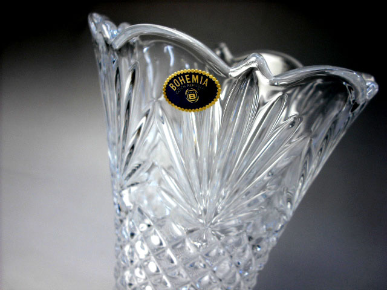

| A |
| |
| Termi |
Selitys |
|
Engl |
| AFAP |
As Fast as possible. uunin kuumennus täysillä tai vastaavasti jäähdytys
niin nopeasti kuin uuni jäähtyy. Käytetään myös ilmaisia SKIP.
|
So snabbt som möjligt. Uppvärmning eller avkylning so snabbt som ugnen låter.
Ordet SKIP andvänds också. |
AFAP
SKIP |
| Aihio |
Puolivalmiste, esimerkiksi fuusattu levy
joka odottaa slumppausta. |
Blank, en halvfabrikat f.ex. en fusad platta som väntar slumpning. |
Blank |
| Allefuusaus |
Kun paloja fuusataan yhtenäisen päälilasin alle. Katso
perusfuusaus |
Underfusing, när man bygger mönstret under ett helt överglas. |
fusing under |
| Aluminioksidi |
Aluminioksidi, Al2O3 on kovaa ainetta jota käytetään hiekkapuhalluksessa ja hiomakivissä.
On myös hyvä erotusaine estämään lasin tarttumista. Tärkeä ainesosa monissa muottiseoksissa. |
Aluminoksid, Al2O3, är ett hårt material som används i sandblasting.
Också en bra ingredient i separatoreänen. |
Alumina |
| Anhydridi |
Kiteinen aine, josta kidevesi on poistettu tavallisesti kuumentamalla
|
Anhydrid. Material där kristall vatten är avlägsnat, vanligen med upvärmning. |
Anhydrate |
| Amorfinen |
Kiteytymätön kiinteä aine, kuten lasi, monet muovit ja hartsit. |
Amorphic. Solid material som inte har kristaa-struktur. F, e. 'glas
harz och plastik polymers. |
Amorphic |
| Antiikkilasi |
Valssaamalla tehty lasi, joka ei ole optisesti täysin kirkas
vaan pinnassa on epätasaisuutta.ja lasin sisällä usein kuplia.
Nimitys tulee ulkonäöstä, ei lasin iästä.
Eri valmistajat käyttävät sanaa eri tavoin. |
Antik Glas en maskinvalsad glas som inte är optisk klar utan ytan är ojämn ock ofta
innehåller bubblor. Termen är inte entydlig, olika fabriker andvänder det
om olika glastyper. Namnet hänvisar till glasts utseende inte till åldern. |
Antique glass |
| Aplikaatio |
Käsitöistä lainattu termi.
Lasin yhteydessä se tarkoittaa mosaiikin
tapaista kylmää työtapaa
joka on koottu liimaamalla palat pohjalasille . |
Applikation. Termen är lånad from handvärk.
mrd glsd hänviar den till mosaik-liknande värk. |
Application |
| Artista |
Eräs Schott'in valmistama
sulatuslasilaatu |
Ett fusing glas som är tillvärkad av Schott. |
GNA engl. Artista |
| Aukaisupihdit |
Pihdit, joilla puristamalla saadaan leikkausviiru aukeamaan
Lue lisää Välineet ja tarvikkeet |
|
|
| Aventuriini |
Läpikuultava lasi jossa on kimaltelevia kulta-, kupari- tai kromihiukkasia.
Nimi tulee aventuriini mineraalista, joka on kvartsia jossa on kiillesulkeumia. |
|
Aventurine |
| B |
| BE |
Lyhennys sanalle Bullseye. |
Förkortning till Bullseye |
Bullseye |
| Bentoniitti |
Savilaatu jolla on suuri kyky sitoa vettä.
Käytetään hiekkavalussa hiekan sitomiseen. |
En speciell typ av lera som har förmågan att binda en stor mäng av vatten.
Andvänds i sandgjutning föt att binda sanden. |
Bentonite |
| Billet |
tiilenmuotoinen lasipalikka, joka on tarkoitettu sulatettavaksi valumateriaaliksi
| En tjock glasbit som tegel. Andvänds i gjutning |
Billet |
| Bullseye | Eräs
sulatuslasilaatu |
Et fusings glas märke. |
Bullseye |
| |
| boraksi |
boraksia käytetään lasitteena (overspray)
Lue lisää Lasite |
Andvänds som glasyr eller föt att minska amältpunkt. |
Borax |
| borosilikaattilasi |
Kuumuutta hyvinkestävä lasilaatu, josta tehdään talousastioita.
Kauppanimiä Pyrex, Jena. Suosittu myös kun tehdään lasihelmiä
lampputekniikalla koska se ei ole niin kranttu jäähdytykselle. |
Glasmaterial som är mycket värmetålig.
Andvänds i hushållartiklar. Kommersiella märken Pyrex och Jena.
Populät också i tillvärkning av glaspärlor med flammteknik därföt att
avkylningär inte för kritisk. |
Borosilicate Glass |
| Böömiläinen kristalli |
1. Lasilaatu: Lyijytön lasi jossa sooda on korvattu potaskalla.
2. Hiontatekniikka, jossa kapealla pyörivällä terällä huotaan uria joista kuvio muodostuu.

|
1. En glasmaterial där kaliumklorid ersätter soda.
2 Slipteknik där en smal roterande hjul slipar v-formade spår som formar dekorationen. |
Bohemian Crystal |
| C |
| |
| Ceriumoksidi, CeO2. |
Metallioksidi, jota hyvin hienona jauheena
käytetään lasin ja muiden aineiden kiilloitukseen |
Andvänds som mycket fin pulver i polering
av glas och andra materialer. |
Cerium oxide |
| D |
| |
| Dalle |
tiilenmuotoinen paksu lasikappale. Käytetään usein valutöiden materiaalina |
Ett brick av glas. SAmma som billet. |
Billet, Dalle |
| devitrifioitua |
Kiteiden muodostumista lasissa,
jolloin pintaosa menettää nesteen ominaisuutensa
ja muuttuu sameaksi |
Delvis kristallisering av glasnaterialet. Ger en grumlig yta. |
s. devitrification tai devit
v. devitrifify |
| dikro |
dikroidinen lasi, jonka pinnoite jakaa valon kahtia
niin että heijastuva valo saa värin ja läpikulkeva valo sen vastavärin.
Suosittu lasi koruissa |
Dikroidik glass, som har en speciellytbehandling så att genomgående jlus får en färg
och samtidigt reflekterad jlus får en komplementär färg. |
Dicroidic |
| E |
|
| |
| Emali |
emalit ovat kyvin hienoksi jauhettua värillistä lasia.
Useimmiten emalia käytetään niin ohuelti ettei yhteensopivuusdesta ole ongelmaa.
Emalia voidaan maalata, silkkipainaa tai ruiskuttaa pintaan.
Polttolämpö yleensä alempi kuin fuusauksessa.
|
Emalj är mycket fint malet färgad glas. Man kan emaljera genom att
måla, acreentrycka eller spraya. Behöver lägre temperatur än fusing.
Vanligen blir emaljlagret så tunn att den inte påvärkar till ompatibilitätet. |
Enamel |
| Erotusaine |
1. aine jolla peitetään uunilevyn tai
muotin pinta. Se estää lasin tarttumisen alustaansa.
Uunipesu tarkoittaa samaa.
Myös kuitupaperia
voidaan käyttää erotusaineena
2. Kipsiesineiden käytetään rasvaa ja/tai saippuaa erotusaineena. |
Separator
1. ytbehandling av ugnsplattan eller formen, son indrar att glas sticker på sitt underlag.
Fiberpapper kan också användas sm separator.
2. När man gjuter gips använder man fet och/eller tvål som separator.
|
Separator
Kiln Wash
engl. Bat Wash |
| Etsaustahna |
erittäin myrkylline nammoniumbifluoridin seos, joka on sakeutettu
helpommin käsiteltäväksi. Käytetään kuvioiden syövyttämiseen lasin pintaan.
Sileässä lasissa etsattu alue erottuu himmenä ja valkoisena valoa vasten |
Etsning cräm. Mycket giftig blandning där ammoniumbifluorid är förtjockad
för lättare behandling. Det används för att korrodera figurer i glasytan. I ett slät glass etsad område
syns matt och vit mot ljuset. | Etching Cream |
| F |
| |
Fasettihiottu |
Lasi, jonka reunaan on hiottu ja kiillotettu näkyvä viiste |
Facet slipning. Glas som har ett snätt avfasning- |
Facet grinding |
| Float lasi |
Pilkingtonin kehittämä lasin valmistusmenetelmä,
jossa lasiaines valetaan sulan tinan päälle. Näin valmistettu ikkunalasi
on erittäin sileätä ja tasalaatuista
Lue lisää |
Firma Pilkington har utväclat en metod att gjuta glasskivor på
smät tenn.Fönstergals som är tillvärkad med denna metod
är mycket slät och av jämn kvalität. |
Float Glass
Window glass |
| flussi |
oikeammin lasite on lasipölyn ja sideaineen sekoitus,
jota voidaan käyttää tasoittamaan ja kiillottamaan pintaa.
Flussi voidaan ruiskuttaa tai maalata pehmeällä siveltimellä.
Lue lisää Lasite |
Fluss, bättre ord är glasyr är en blandning av glas och bindemedel
som kan användas för att få ytan jämnare och blank. |
Flux,
Overspray
Overglaze
|
Foliointi |
leikatun lasinpalan kehystäminen folioteipillä ennen kiinnijuottamista
(tiffanytekniikka) |
Foliering, (itiffanyteknik) att inrama glasbitar med foliotejp för lodning. |
Foiling |
| Fritti |
katso lasimurska |
Fritt, krossad glas |
Fritt |
| Frittimaalaus |
työtapa jossa muodostetaan (tavallisesti esittävä) kuva sulattamalla
erivärisiä frittejä kuvioiden muotoon |
Fritmålning, arbetsmetod där man formar en bild på glasytan
med att fusa olika färgade fritt figurer. |
Frit painting |
| fuusaus |
lasin yhteensulattaminen uunissa.
Lue lisää
ja täältä |
Fusin, sammansmältning av glas in en ugn. |
v. fusing
s. fusion
a. fused |
| G |
| |
| Glitteri, glimmeri |
Hienoksi jauhettua värjättyä kiillettä, jota käytetään antamaan pinnalle
väriä ja välkettä. Se ei varsinaisesti fuusaudu lasiin, mutta saadaan tarttumaan
kun pohjalasi kuumennetaan kyllin pehmeäksi. |
Finmalt färgad glimmer som andväds att ge färg och spelnig till ytan.
Egentligen blir den inte fusad i glas, men sticker nog fast när glaset är uppvärmt tillräckligt mjuk. |
Mica |
| gritti |
eli seulaluku on ilmaisu jauheiden, erityisesti hioma-aineiden
karkeudelle. Luku määräytyy sen mukaan montako lankaa tuumalla on seulassa josta aine
ei enää mene läpi. Suuri grit-luku tarkoittaa siis hionojakeisempaa ainetta. |
Grit, eller skärmtal är ett uttryck för pulver och
särskilt abrasiver för att beskriva kornstorlek.Desto större git, dess mindre korn.
|
Grit, |
| H |
| |
| Halkaisupihdit |
Katso aukaisupihdit |
|
|
| hauduttaminen |
uunin lämpö pidetään tasaisena ja annetaan lämmön vaikuttaa |
|
s. soaking
v. soak |
Hiekkapuhallus |
Lasin pintaan puhalletaan paineilmalla hiekkaa,
alumiinioksidia tai muuta hioma-ainetta, tavallisesti suojamskin läpi.
Se kuluttaa lasin pinnan himmeäksi.
Hiekkapuhalluksella saadaan myös syvempiä reliefejä. |
Sandblästring. Med tryckluft bläser man sand eller annar abrasiv
som äter ytan matt. |
Sand blasting
Etching |
| Hioma-aine |
hienojakoinen jauhemainen tai tahna joka hangatessa hioo (kuluttaa) pinnan sileämmäksi.
Hioma-aine voi olla myös hiomapaeriin tai muuhun pohjaan kiinnitetty. |
Abrasiv, fint pulver eller pasta som slipar ytan. Abrasiv kan vara klistrad på slippaper eller annan underlag.
|
Abrasive |
| Hiomakone |
hiomakoneita on erilaisia. Lasitöissä tavallisin on reunahiomakone,
jossa timanttipinnoitettu pyörivä rulla tekee hankaustyön.
Ammattikäytössä on myös nauhahiomakoneita ja tasohiomakoneita. |
Slipmaskin. Dom kommer i olika variationer. Det vanligaste i glas arbetet är kant slip maskin.
På maskinen är en cylinder som har diamantabrasiv på ytan.
Det andvänds för att passa glasbitarnas kanter ihop.
För professionell arbete finns bandslip som är efektivare och lättare att få raka kanter.
Dessutom finns maskiner med roterande flat yta.
|
Grinder |